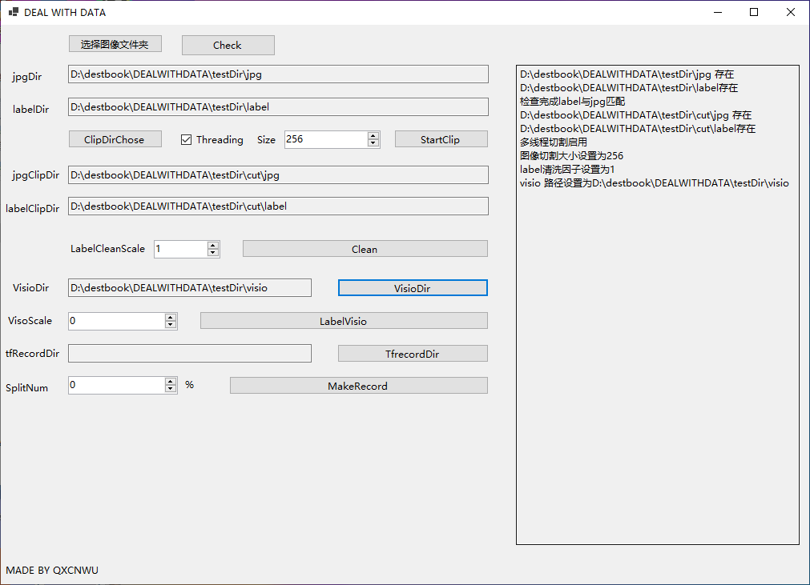

要详细了解整个影像处理过程，主要需要提前掌握相应的python语言基础、基础javascrip语法、C# .net core程序搭建，html/css相关语法，以及tensorflow深度学习框架，以及GEE基本查询显示导出功能,在此项目中多线程模式常常贯穿于整个处理过程希望了解相关指示。整个文件夹结构
DEALWITHDATA文件夹中包含运行glacier2.exe 遥感影像处理程序的必要环境与资源
1 软件打开界面如下
2 点击选择图像文件夹设置原始JPG/LABEL图像的保存位置 后点击Check程序会检查JPG与LABEL是否匹配，jpg/label文件名称应当一一对应并且相等
3 点击ClipDirChose 设置图像切割保存文件夹，文件夹下应该含有jpg/label子文件夹 同时设置切割大小一般设置为256 如运行环境内存大于4G推荐启用多线程模式 之后点击StartClip程序开始切割文件夹下图像
4 labelCleanScale一般设置为1用于去除无冰川标注的样本之后点击Clean
5 点击VisioDir设置可视化文件夹

6 设置VISIOSCALE可视化因子 推荐250 之后点击labelVisio执行
7 点击TfrecordDir设置 train.record/test.record文件保存位置 同时设置训练样本占所有样本的权重 点击MadeRecord执行
DEALWITHTRAIN目录下包含以下子文件夹 DEALWITHTRAIN主要用于cnn/fcn网络搭建 以及在colab上的训练
在以上操作步骤完成以后得到相应的最优 model.h5模型文件之后将其部属到gDrive上后 执行GetGeeMap.ipynb文件将model.h5文件转换为tf格式的文件
之后执行GEEUSED.ipynb文件获取整个区域AI标注影像